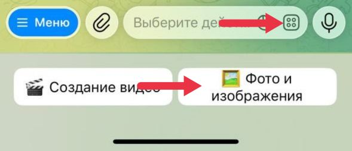

Этот раздел поможет сделать фото более чётким, ярким и аккуратным. Ниже мы расскажем как использовать эти инструменты.
Для выбора инструментов для работы с изображениями нажмите на кнопку «🌄 Фото и изображения», расположенную под полем для ввода текста.

Далее выбираем "Улучшение"
После нажатия этой кнопки появится меню с кнопками для активации нужного инструмента.
Нажимая на кнопки в данном меню, вы активируете нужный инструмент. После активации вы можете отправлять ваши фотографии как файл (без сжатия). Для этого нажмите на иконку «Скрепка», затем на кнопку «Файл», а потом — «Галерея» или «Файловое хранилище» и выберите нужную фотографию. После отправки изображения нужно подождать от нескольких секунд до нескольких минут, и вы получите обработанное изображение.
В разделе Фото найдите пункт, связанный с улучшением качества. Выберите его — бот подскажет, сколько займёт обработка и что можно ожидать от результата.
Отправьте фотографию в чат с ботом. Желательно загружать её как файл, а не как сжатое изображение, чтобы сохранить качество.